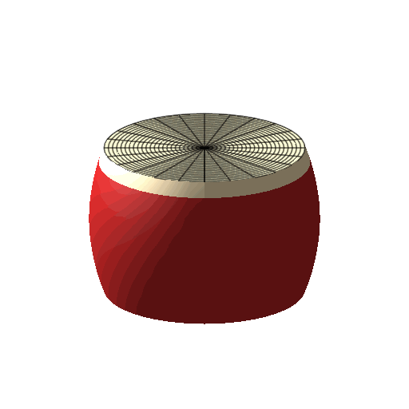
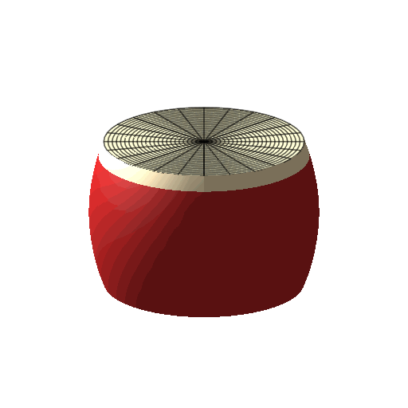
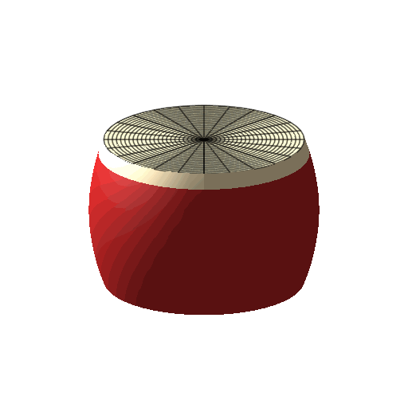

|  | ||
| $\sin(t)J_0(a_{01}r)$ | $\sin(t)J_0(a_{02}r)$ | $\sin(t)J_0(a_{03}r)$ |
|  | ||
| $\sin(t)\cos(\theta)J_1(a_{11}r)$ | $\sin(t)\cos(\theta)J_1(a_{12}r)$ | $\sin(t)\cos(\theta)J_1(a_{13}r)$ |
| $\sin(t)\cos(2\theta)J_2(a_{21}r)$ | $\sin(t)\cos(2\theta)J_2(a_{22}r)$ | $\sin(t)\cos(2\theta)J_2(a_{23}r)$ |
|  | ||
| $\sin(t)\cos(3\theta)J_3(a_{31}r)$ | $\sin(t)\cos(3\theta)J_3(a_{32}r)$ | $\sin(t)\cos(3\theta)J_3(a_{33}r)$ |